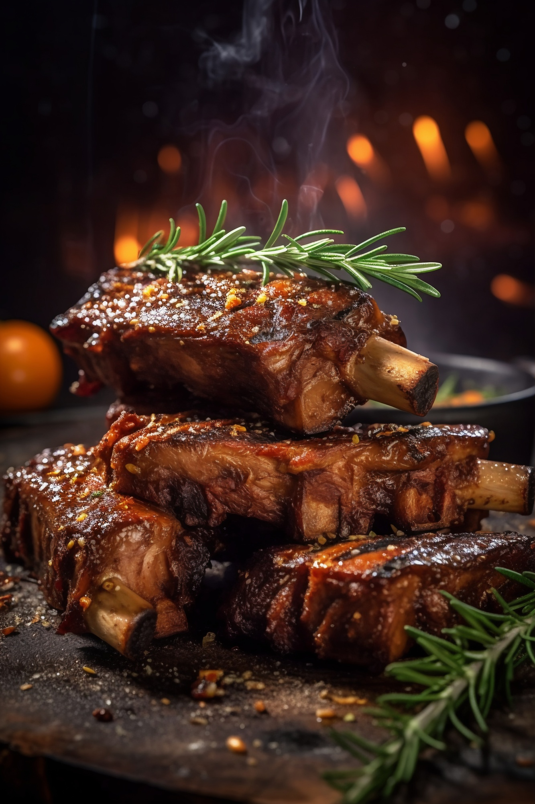

nyama-choma
Home

Meet the kenyan giant meal
This is the kind of a meal that will leave you yearning for more
Meat and served when soo tasty to an extent you won't feel like leaving Kenya
kenyan nyama choma
ingrendents
- Nyama
- masala
- kachumbari
- cooking oil
- grill
steps
- Buy 2 big chunks of nyama from the butchery
- Cut the meat along the grain area
- Marinate the meat using the readily available spices
- Add some cooking oil in a frying pan
- Pour the cooking oil in a separate pan and wait for it to cool down
- In a heated grill place the marinated meat and wait untill it turns golden brown
- Serve the meat and enjoy